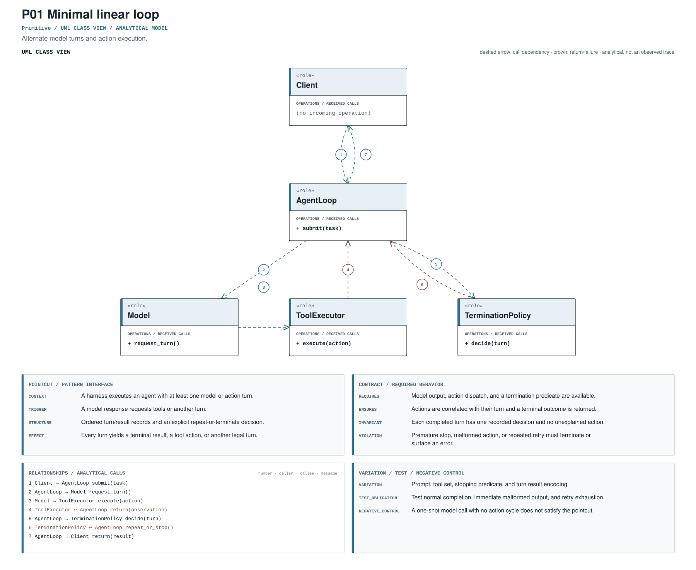

Minimal linear loop
Alternate model turns and action execution.
agent_turn_executionRECORD STATUSCandidate · v0.1.0Pointcut
Where the mechanism applies. All four dimensions belong to the proposed match, not just its vocabulary.
- Context
- A harness executes an agent with at least one model or action turn.
- Trigger
- A model response requests tools or another turn.
- Structure
- Ordered turn/result records and an explicit repeat-or-terminate decision.
- Effect
- Every turn yields a terminal result, a tool action, or another legal turn.
Protected contract
The obligation that clients, operators, and auditors should be able to rely on.
- Requires
- Model output, action dispatch, and a termination predicate are available.
- Ensures
- Actions are correlated with their turn and a terminal outcome is returned.
- Invariant
- Each completed turn has one recorded decision and no unexplained action.
- Violation
- Premature stop, malformed action, or repeated retry must terminate or surface an error.
Negative control
A one-shot model call with no action cycle does not satisfy the pointcut.
Variation & lifecycle
The hot spot is admitted only where the protected semantics survive.
Permitted variation
Prompt, tool set, stopping predicate, and turn result encoding.
Test obligation
Test normal completion, immediate malformed output, and retry exhaustion.
Evolution question
Has the loop moved from ad hoc control to a typed runner or state machine?
Analytical interaction model
A readable arrangement of roles and messages derived from the proposed specification.

This is an analytical model, not an observed trace and not evidence of implementation. Edge order is not a universal execution timeline.
Download diagram PDFEvidence & provenance
Each layer answers a different question. Do not substitute retrieval for review.
Source-located exemplar
A concrete source anchor is available for this proposed record. It is one exemplar, not evidence that all repositories—or every contract field—conform.
Review boundary: this candidate and its specification come from an AI-assisted study. Independent human validation remains open.
97.2% of repository families in the frozen panel have at least one current cue, historical cue, or canonical source layer. This is not confirmed prevalence.
Current lexical-cue repositories: 39 / 4186bd29878b30src/agents/run_internal/run_loop.py:987tests/test_agent_runner.py:1Explicit agent turn/tool streaming loop.
Exploratory retrieval cue Regex / v0.1.0
(?i)\bwhile\s+(?:true|not\s+done)|\bmax_(?:turns|steps|iterations)\b|\brun_(?:loop|until)\bThis expression is a discovery instrument only. A match is a retrieval cue—not a confirmed implementation, pointcut match, or contract proof.